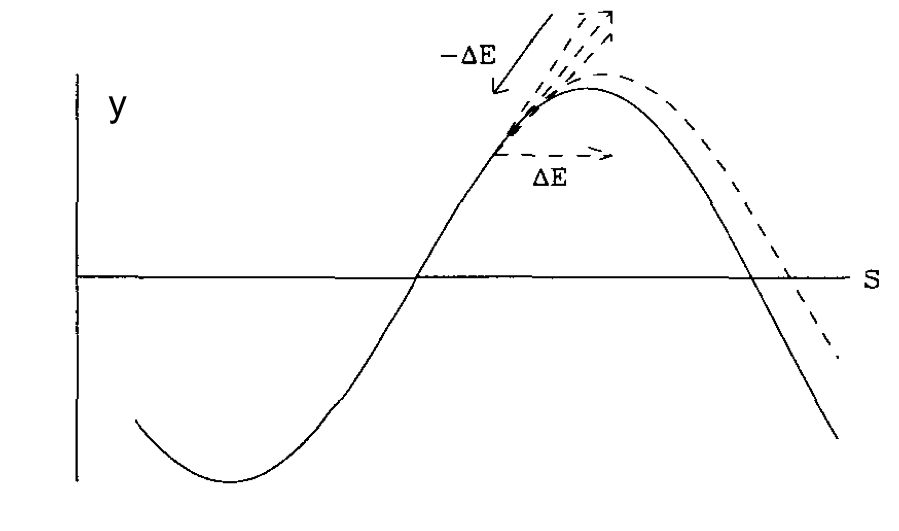

Dynamics in Electron Storage Ring#
The energy loss and quantum fluctuation of synchrotron radiation will dominate the dynamics in a electron storage ring.
Energy loss –> Damping
Quantum fluctuation –> Excitation
The radiation power gives:
For longitudinal maps, we care about the total radiated energy:
As you will see below, we will express results in a series of integrals through the ring, named radiation integral. Here is the definition of the second radiation integral.
And the total photon emits per turn is:
Damped Longitudinal Motion#
Since the radiation power is energy dependent, the particle with momentum deviation \(\delta\) will radiate differently than the reference particles.
In longitudinal dynamics session, we have
Adding the term of radiation energy loss, we should have:
Or in small amplitude/long time scale approximation, the differential equation becomes:
Together with the phase change equation:
The we reach a second order differential equation of the beam energy deviation with damping terms.
If we define the synchrotron frequency \(\omega_s\) and damping coefficient of energy \(\alpha_E\) as:
The equation becomes:
And the solution is approximately:
Where \(A\) and \(\phi_0\) is determined by the initial condition.
Now we need to calculate the damping term carefully, to taking to account
Energy deviation
Momentum compaction
The derivative with respect to \(E\) gives:
We know that \(P \sim E^2 B^2\) therefore:
After ignoring the second order term:
Here, every term should be evaluated for particle with energy \(E_0\). Then plug in the form:
Therefore the damping coefficient \(\alpha_E\) becomes:
Here we define damping partition number \(\mathcal{D}\) and the fourth radiation integral \(I_4\)
When the accelerator uses separate function magnets with identical dipoles, viz \(K=0\) in dipoles and \(\rho\) are piecewise constant, the damping partition simply:
import numpy as np
import longitudinal as lde
import matplotlib.pyplot as plt
%matplotlib notebook
turns=3000
energy=3e9 #3GeV
mass=0.511e6 # Electron
p0=np.sqrt(energy*energy-mass*mass)
frf=500e6
rho=25
harm=1300
voltage=5e6
mcf=3.68e-4
update_eta=True
# Gamma and Betas
gamma=energy/mass
eta=mcf-1/gamma/gamma
beta=np.sqrt(1-1/gamma/gamma)
Usr=8.85e-5*np.power(energy/1e9,4)/rho*1e9
sin_phi_s=Usr/voltage
phi_s=np.arcsin(sin_phi_s)
yf=np.sqrt(np.cos(phi_s)-(np.pi-2*phi_s)*np.sin(phi_s)/2)
height=2*np.sqrt(voltage/2/np.pi/beta/beta/energy/harm/np.abs(eta))*yf
phi_0=np.pi-phi_s
#phi_0=phi_s
delta_E=height*energy*.99
npar=2
initial_phi=np.ones(npar)*(phi_0)
initial_de=np.linspace(0,1, npar)*delta_E
result=lde.longitudinal_evolve(turns,
initial_phi,
initial_de,
sin_phi_s=sin_phi_s, alphac=mcf, E0_ini=energy,
mass=mass, e_volt=voltage, harm=harm,
update_eta=update_eta, energy_change=False, damping_turn=1000
)
fig,(ax1,ax2)=plt.subplots(1,2, figsize=(8,4))
ax1.set_title(r"Longitudinal Phase Space $(\phi,\delta)$")
ax2.set_title(r"Longitudinal Phase Space $(\phi,\Delta E)$")
ax1.set_xlabel('Phase [rad]')
ax2.set_xlabel('Phase [rad]')
ax1.set_ylabel(r'$\delta=dp/p_0$')
ax2.set_ylabel(r'$\Delta E [MeV]$')
#ax1.set_xlim([-np.pi,np.pi])
ax1.set_ylim([-2*height,2*height])
ax2.set_ylim([-2*height*energy*beta*beta/1e6,2*height*beta*beta*energy/1e6])
#ax1.set_prop_cycle(plt.cycler('color', plt.cm.Oranges(np.linspace(0, 1, 8))))
ax1.plot(result[0], result[2], linestyle=None)
#ax2.set_prop_cycle(plt.cycler('color', plt.cm.Blues(np.linspace(0, 1, 8))))
ax2.plot(result[0], result[1]/1e6, linestyle=None)
for ax in (ax1,ax2):
ax.set_xticks([-np.pi, -0.5*np.pi, 0., .5*np.pi, np.pi, 1.5*np.pi, 2*np.pi])
ax.set_xticklabels([r"$-\pi$", r"$-\frac{1}{2}\pi$", "$0$", r"$\frac{1}{2}\pi$",
r"$\pi$", r"$\frac{3}{2}\pi$", r"$2\pi$"])
ax.set_xlim([0,2*np.pi])
plt.tight_layout()
---------------------------------------------------------------------------
ModuleNotFoundError Traceback (most recent call last)
Cell In[1], line 2
1 import numpy as np
----> 2 import longitudinal as lde
3 import matplotlib.pyplot as plt
4 get_ipython().run_line_magic('matplotlib', 'notebook')
ModuleNotFoundError: No module named 'longitudinal'
Damped Transverse Motion#
The idea of damping in transverse motion is that the recoil of SR is always parallel and opposite to the momentum \(\mathbf{P}\). The lost energy will be compensated by the RF cavity, where the momentum gain is always along the desire orbit. Therefore the transverse emittance will keep shrinking.
Vertical motion#
The vertical damping is simpler than the horizontal one because the dispersion function is everywhere zero.
{kind=link}
Since the particle does not change the net energy after one turn, we will analyze this problem in \((x,x')\) phase space. The action of the particle is given by:
In the process of SR, the momentum change is along the particle ‘s trajectory, therefore:
The lost energy will be replenished by the RF cavity and the momentum change \(\delta p\) will along the longitudinal direction:
The change of angle gives
The amplitude of the betatron motion gives:
Therefore:
After taking time average over the ring, and by averaging in one betatron oscillation \(\left<yy'\right>=0\):
Therefore the damping coefficient of vertical direction becomes:
Horizontal motion#
 For horizontal direction, we still have
\begin{align}
x_\text{after SR}&=x_\text{before}\\
x'_\text{after SR}&=x'_\text{before}
\end{align}
For horizontal direction, we still have
\begin{align}
x_\text{after SR}&=x_\text{before}\\
x'_\text{after SR}&=x'_\text{before}
\end{align}
The orbit has extra contribution from the dispersion:
As we see from the vertical plane, both the position and angle does not change therefore:
where \(u\) is the SR energy loss in short distance \(dl\)
Therefore the amplitude change becomes:
Taking the average over on betatron oscillation \(\left<\alpha\right>=0\) and \(\left<x'_\beta\right>=0\):
\(u\) is calculated as:
Then the amplitude change over the ring with averaging \(\left<x_\beta\right>=0\) and \(\left<x_\beta^2\right>=A_x^2/2\):
The above result is before the considering the RF acceleration, which is same for both transverse direction. Combine these two factors (RF and dispersion):
Or the horizontal damping coefficient reads
Robinson Theorem#
If we define:
Then the damping coefficients are:
And the Robinson theorem states:
And the damping time constant:
And the damping decrements:
The damping effect can be ‘redistributed’ by adjusting the damping partition \(\mathcal{D}\). Besides the lattice design, the insertion device also can change the damping partition.
Quantum Excitation#
The quantum effect of the SR satisfy the following properties:
Discrete energy
Instantaneous
Random emission, satisfy Poison distribution
Equilibrium energy spread#
The longitudinal oscillation, without radiation damping, gives:
We are interested in the time average of the amplitude square of the longitudinal oscillation, \(A^2\). The damping effect for \(A^2\) has half of the damping time:
On the other hand, the electron emits discrete photons, which is random. Assuming that, at time \(t_1\), the electron radiates a photon with energy u:
Since \(t_1\) is random, in time average, we have the amplitude change in \(\Delta t\):
where \(n(u)\) is the number of photon of energy \(u\).
Therefore, we can combine the excitation and damping:
And the equilibrium energy spread is given by \(\frac{d\left<A^2\right>}{dt}=0\) and averaged over one turn
We define the third radiation integral \(I_3=\oint\rho^{-3} ds\)
Therefore the relative energy spread gives:
For electron, \(C_q\) is a constant, which is \(3.83\times10^{-10}\)m. Surprisingly, the energy spread does not depend on RF parameters. But the bunch length does. From the longitudinal dynamics section, we know that:
It converts to:
Equilibrium transverse emittance#
First, we look at the horizontal direction, we know that the action \(J\) of the horizontal direction is damped by SR as:
But the instantaneous emission of a energy quanta \(u\) gives an prompt kick of
The change of action gives:
Taking average of one turn, we have
Therefore the equilibrium betatron emittance gives:
Here we define the fifth radiation integral \(I_5=\oint\mathcal{H}/\rho^{-3} ds\)
The transverse beam size, therefore, has contribution from both the equilibrium betatron motion and the energy spread/dispersion:
For vertical direction, follow the above treatment will give the equilibrium emittance is zero! Therefore, we have to consider higher order effect: the SR cone angle is about \(\theta \sim 1/\gamma\) the random vertical betatron angle change is:
Follow the similar treatment: we can easily find:
which is an extremely small number.
However, in reality, we can use betatron coupling to control the emittance of both transverse direction.
We found the relations of radiation integral and the storage ring quantities in the table:
List of Radiation Integrals |
Quantities in Electron Storage Ring |
|---|---|
\(I_1=\oint\frac{D}{\rho}ds\) |
\(\alpha_c=I_1/ C\) |
\(I_2=\oint\frac{1}{\rho^2}ds\) |
\(U_{SR}=\frac{C_\gamma}{2\pi} E^4 I_2 \) |
\(I_3=\oint\frac{1}{\rho^3}ds\) |
\(\left(\frac{\sigma_E}{E}\right)=C_q\gamma^2\frac{I_3}{2I_2+I_4}\) |
\(I_4=\oint\frac{D}{\rho}\left(\frac{1}{\rho^2}+2K\right)ds\) |
\(\mathcal{D}=\frac{I_4}{I_2}\) |
\(I_5=\oint\frac{\mathcal{H}}{\rho^3}ds\) |
\(\epsilon_x=C_q\gamma^2\frac{I_5}{I_2-I_4}\) |
Transverse emittance optimization#
A general practice is to minimized the emittance of the electron storage ring, i.e. minimize the \(I_5/I_2\) since in separate magnet machine \(I_4 \ll 1\). If we look at the form of \(I_5\), we need to minimize \(\mathcal{H}\) in dipole. Let’s consider a general case here to minimize \(I_5\) without any other constrains.
Consider the dipole with length \(L\) and bending angle \(\theta\ll 1\). The optical function on both side of the dipole can be arbitrary. Let’s assume the optics at entrance of the dipole reads: \(\beta=\beta_0\), \(\alpha=\alpha_0\) and \(\gamma_0=\left(1+\alpha_0^2\right)/\beta_0\). The dispersion function at the same location is \(D_0\) and \(D'_0\).
At location \(s\), the twiss parameters read:
From the dipole’s \(3\times 3\) matrix \(\mathcal{M}\)
At arbitrary location, the dispersion function gives:
import sympy
sympy.init_printing(use_unicode=True)
l,l1,t,f=sympy.symbols("L L_1 \\theta f")
beta0, tb, alpha0= sympy.symbols("\\beta_0 \\tilde\\beta \\alpha_0")
d0, td, dp0, tdp=sympy.symbols("D_0 \\tilde{d} D_p \\tilde{d_p}")
rho, s= sympy.symbols("\\rho s")
gamma0=(1+alpha0*alpha0)/beta0
beta=1/gamma0+gamma0*(s-alpha0/gamma0)*(s-alpha0/gamma0)
alpha=alpha0-gamma0*s
d=s*s/2/rho+d0+dp0*s
dp=s/rho+dp0
H=sympy.simplify(beta*dp*dp+2*alpha*d*dp+gamma0*d*d)
H0=H.subs(s,0)
Hint=sympy.integrate(H,s)
H_ave=(Hint.subs(s,l)-Hint.subs(s,0))/l
H_simp=sympy.simplify(H_ave.subs(beta0, tb*l).subs(d0,td*l*t).subs(dp0,t*tdp).subs(rho,l/t)/l/l/l*rho*rho)
#H_simplified.subs(alpha0, 10*tbeta/4)
#H_simplified.subs(alpha0, sympy.sqrt(15)).subs(tbeta,sympy.sqrt(12)/sympy.sqrt(5))
Hoptd=sympy.simplify(H_simp.subs(td, sympy.Rational(1,6)).subs(tdp, sympy.Rational(-1,2)))
sympy.simplify(Hoptd.diff(alpha0))
Hoptd.diff(tb).simplify()
#Hoptd.diff(alpha0).simplify()
Hoptd.subs(tb, 8/sympy.sqrt(15)).subs(alpha0, sympy.sqrt(15))
By defining \({\tilde{\beta}}=\beta_0/L\), \({\tilde{\gamma}}=\gamma_0 L\), \({\tilde{d}}=D_0/(L\theta)\) and \({\tilde{d}_p}=D'_0/\theta\), we found
First we can solve for the optimum dispersion function:
Therefore we have \(\tilde{d}=1/6\),\(\tilde{d_p}=-1/2\). And it does not depend on the optics function! This actually relates to the symmetric condition. Then the ratio of the radiation integral reduces to :
After taking derivative, we have:
Then we have
and finally the optimized
fig, ax=plt.subplots()
ax_m=ax.twinx()
norm_s=np.linspace(0,1,1000)
d=norm_s*norm_s/2.0+1.0/6-norm_s/2.0
ds=norm_s-0.5
be_s=1/2/np.sqrt(15.0)
s_star=0.5
be=be_s+(norm_s-s_star)*(norm_s-s_star)/be_s
al=-(norm_s-s_star)/be_s
h=be*ds*ds+2*al*d*ds+d*d/be_s
print(np.average(h))
l1=ax.plot(norm_s,be, label=r'$\beta$ function')
ax.set_xlabel(r's [in $L$]')
ax.set_ylabel(r'$\beta$ [in $L$]')
ax_m.set_ylabel(r'$D$ [in $L\theta$], $\mathcal{H}$ [in $L\theta^2$]')
l2=ax_m.plot(norm_s,d, color='g',label=r'Dispersion function')
l3=ax_m.plot(norm_s,h, color='r',label=r'$\mathcal{H}$ function')
lns=l1+l2+l3
labs = [l.get_label() for l in lns]
ax.legend(lns,labs,loc='best')
0.021581253096642352
<matplotlib.legend.Legend at 0x11331a630>